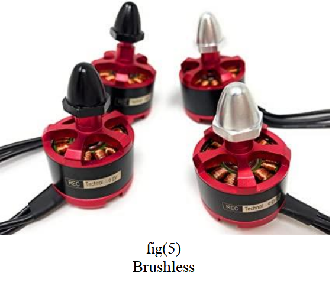
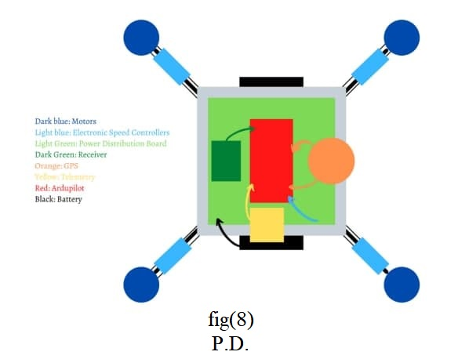

Motors
Spinning motors have a significant part in drone capability. The
motors
functioning principle is based on creating thrust by pushing
air downwards.
The flight controller (APM) should use electronic
speed controllers(ESC)
to convey information to the brushless motors in
order to complete this
operation. Instructions for the direction
and the revolutions per minute
are included in the data (RPM). On an
equal space basis, the motors
should be arranged on the four corners
of the drone. Two of the four
motors should be placed diagonally
opposite each other, rotating in the
opposite direction as the other
two. 920kv
brushless motors(shown in fig(5))
were chosen for this project to improve
performance of controllers.

ESC
The electronic motor speed control (ESC) function converts a pilot's
commands into precise motion-control instructions transmitted to the
motors. The Simonk 30A ESC(shown in fig(6)) was chosen because it is
specifically built for
drones and enables better and more constant control
of motor speeds
as well as better flying efficiency than other ESCs on
the market.
Propeller
In general, propellers(shown in fig(7)) in the drone business lead in torque
and
generate the thrust to keep the drone aloft. The propellers are
responsible
for the upward push, which is measured in grams or
pounds. The thrust must
be
twice the drone's anticipated weight. The following formula is
used to
calculate thrust:
Thrust = 2 * the approximate weight of the drone.
* The final thrust will divided by the number of motor.
Digital proportional radio control system FS-i6x
| RF Range |
2.40 ~ 2.48 |
| Bandwidth |
500 KHZ |
| Dimensions |
9.45in * 8.27in * 4.33in |
| weight |
700g |
Battery
| Capacity |
1500mAh |
| Discharge rate |
30c |
| Output voltage |
11.1v |
Ardupilot
| Flight controller model |
Ardupilot Mega 2.6 |
| Size |
83mm * 44mm * 13mm |
| weight |
700g |
| Housing material |
plastic |
Power Distribution Board
The power distribution board, often known as the PDB, is an
important hardware component that distributes power from the
battery to other hardware components. Fig(8) shows power distribution

GPS
| Model |
Ublox NEO-M7 |
| Dimensions |
54mm * 22mm |
| Start Time |
30s |
| weight |
33g |
Telemetry
| Bandwidth |
915MHz |
| Power |
500mw |
| Dimensions |
4.47in * 3.54in * 0.98in |
| weight |
63g |
Distance sensor
The LiDAR Laser Distance Sensor (shown in fig(9)) These type of sensors are used to sense the obstacles. The distance sensors are based on
laser based. The above mentioned drone sensors are useful in design and development of drone system. The sensor will work
when the body approaches an approximate distance of 50-80cm.
airfly power module
Apm main function is to measure the capacity
of the battery when it gets low it will send the order to the
microcontroller to return to the landing zone where it took off
immediately. APM will be connected between the battery
and the microcontroller. A.P.M is shown in fig(10)
.